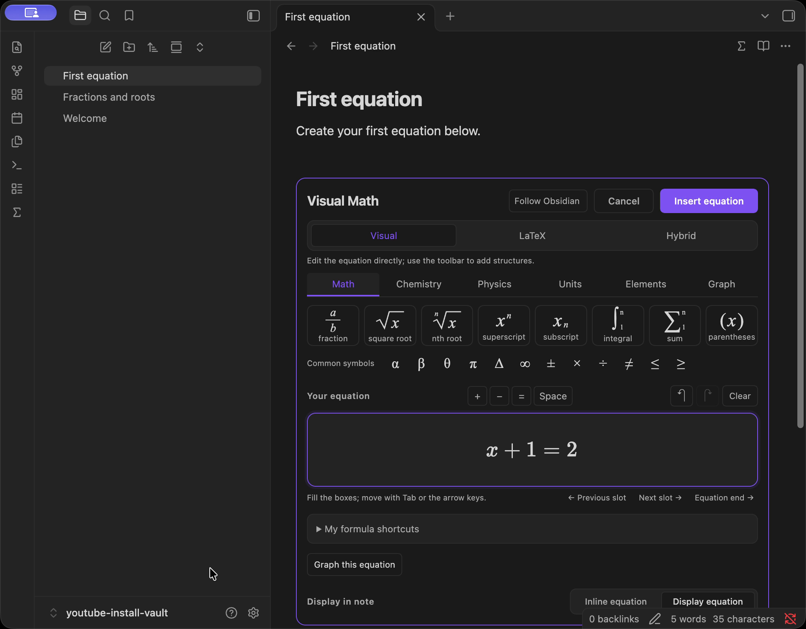

Write it your way.
Build fractions, 1–6 matrices, 2–6 equation systems, sets, sequences and advanced templates visually, or import guarded single-equation LaTeX source. Use Hybrid to see both together, with one equation draft.
VisualLaTeXHybrid
Turn the ideas in your head into equations in your notes. Write visually, work in LaTeX, and explore graphs — right inside Obsidian.
Obsidian 1.14.4+ · Desktop only · By Oliver

THINK ON THE PAGE
Keep the working where it belongs.
Alongside your thoughts, in your own vault.
Build fractions, 1–6 matrices, 2–6 equation systems, sets, sequences and advanced templates visually, or import guarded single-equation LaTeX source. Use Hybrid to see both together, with one equation draft.
Preview supported functions from the current equation. Explore polar curves, complex points, explicit XYZ wireframes, seven adjustable geometry models and three basic spatial scenes.
Numerical graphing and bounded analytic scenes within supported domains; not a general equation solver or CAD system.
Insert the equation and graph into your note. They become independent blocks. Choose Save view to keep graph navigation changes.

A QUICK LOOK INSIDE
Real Obsidian footage · Recorded in v0.8.2.
Current plugin release: 1.0.0 · Stable.
On screen (Recorded in v0.8.2): visual formula editing, a function graph, an XYZ wireframe, and installation in Community plugins. No narration; optional background music.
Watch on YouTubeProduct overview · 29 seconds · V5 · Recorded in v0.8.2. Continue with the step-by-step tutorials.
A TOOLKIT FOR SCIENTIFIC NOTES
Nine focused capabilities in 1.0.0 Stable —
from guarded formula import to matrices, geometry and local graphs.
Insert and reopen inline or display LaTeX formulas, including fractions, roots, scripts, integrals and sums.
Unknown macros and complex TeX may require source editing.
Plot supported explicit y=f(x), r=f(theta), z=f(x,y), and rectangular complex points locally.
Numerical approximations; no general implicit/parametric solver, symbolic algebra, overlays or sliders.
First and second numerical derivatives and finite definite integration for supported real functions.
Not symbolic differentiation/integration; finite increasing continuous intervals only.
Format chemical notation, use bounded balance suggestions, insert physics symbols and editable templates.
Balance suggestions do not establish reaction feasibility; no molecular or physics simulation.
Convert among 63 preset unit choices in 11 categories; look up 118 elements.
Within-category preset conversion and local reference data; no arbitrary dimensional analysis.
Review original and candidate, recognize one outer math wrapper, explicitly Apply/Cancel and Save; preserve exact source.
8192 UTF-16 original-input units; visual budget4096 plus structural limits. Longer valid or unknown notation is source-only, not full visual support. No batch/file/OCR/document import or mathematical repair.
1–6 rows/columns for matrix cells;2–6 single-column rows with an automatic left brace for systems. Preview, apply, cancel and draft Undo/Redo.
Notation editing, not matrix calculation or an equation solver. Native1.0.0 acceptance targeted a two-row system; broader matrix behavior passed components.
Nine advanced-math templates,19 set/sequence tools and common trigonometric/geometric notation.
Editable notation without symbolic evaluation or proofs.
Seven adjustable models and three scenes: two planes,line–plane,sphere–plane. Save dimensions,face visibility,rotation and zoom in vme-plot blocks.
Fixed bounded analytic scenes; no arbitrary solid intersections or CAD.1.0.0 passed component/logic round trips; historical representative native evidence remains version-specific.
Your workspace stays local. No runtime account or network connection is required. Downloading and installing the plugin needs access to its distribution source.
English · 简体中文 · Español
START HERE
Visual Math is an Obsidian desktop plugin.
Install it in the vault you want to use.
YOUR FIRST EQUATION
Use an editable Markdown note in
Obsidian’s desktop main window.
Click ∑ in the note header or ribbon. Choose Visual → Math → Fraction.
Enter 3, press Tab, then enter 4. Switch to LaTeX and append +1.
Choose Hybrid to see the source and formatted equation. Choose Insert equation.
Close the note tab and reopen it. Put the cursor inside the saved equation, then click ∑ to edit again. Choose it from the picker if prompted.
LEARN ONE THING AT A TIME
Start with installation, then build
your first equation and go from there.
5 step-by-step tutorials are available now (Recorded in v0.8.2). Start with lessons 01–03 in the Start Here playlist , or choose any lesson 01–05 below.
Find the correct plugin, install it and enable it in your vault.
Write a formula, insert it, then close and reopen the note.
Build structured notation with fractions and roots.
Insert inline and display formulas in one note, select the right formula in the picker, then close and reopen.
Build powers, subscripts, parentheses, sums and definite-integral notation with placeholder navigation, then save and reopen.
AN OPEN NOTEBOOK
Future scope and dates are not confirmed.
Discussion themes are marked Considering.
Last product review: October 31, 2026
Discussion themes only.
No confirmed work announced.
No confirmed work announced.
First stable desktop release: guarded single-formula import, matrices, systems, advanced notation, sets/sequences, geometry and three basic spatial scenes; custom formula keywords removed.
LATEST RELEASE
Released October 31, 2026
First stable desktop release: guarded single-formula import, matrices, systems, advanced notation, sets/sequences, geometry and three basic spatial scenes; custom formula keywords removed.
Stable desktop release. Tested scope and limitations remain documented; not every platform or formula structure is verified. Automated directory scan for 1.0.0: Completed · Health Excellent · Review Satisfactory (6 passed, 15 nonblocking type/CSS maintenance warnings, 0 errors; not manual security certification).
Read the release notesA FEW USEFUL DETAILS
Have a question or a reproducible issue?
Talk to us on GitHubVisual Math runs inside Obsidian on desktop. This website introduces the plugin and helps you install it in a vault.
This release requires Obsidian 1.14.4 or later and is desktop only. Native checks have used macOS with Obsidian 1.14.5 (targeted 1.0.0 acceptance) (and Obsidian 1.14.4 for v0.8.2 media and earlier checks). Windows and Linux have not been verified. Mobile is not supported.
No runtime account, API key or Node.js is required for the compiled plugin. The editor, bundled data and graph tools run locally. Downloading and installing requires access to the distribution source.
Live equation/graph preview is linked only while its editor is open. Saved formula and graph are separate blocks; navigation persists only when explicitly saved. Changing a saved equation later does not automatically update an existing graph. After moving, zooming or rotating a graph, explicitly choose Save view or Save graph to keep the changes.
Graphing and calculus use numerical methods within supported domains. They are not a general equation solver or symbolic algebra system. Numerical calculus is for supported real functions on finite, increasing, continuous intervals; results are approximations.
Unknown macros and complex TeX may need source editing. In 1.0.0, guarded single-equation import accepts up to 8,192 UTF-16 code units of original input with a 4,096-unit visual budget; longer valid expressions and unknown macros can be saved in source-only mode. Visual editing does not support every TeX command.
Open a GitHub issue with your plugin version, Obsidian version, operating system and exact steps. Include a small example you are comfortable sharing. Check existing issues first.
GNU GPL version 3 only with the Obsidian linking exception. See the licensing details for the full terms and third-party notices.
THE NEXT IDEA IS YOURS
Obsidian 1.14.4+ · Desktop only · 1.0.0 Stable